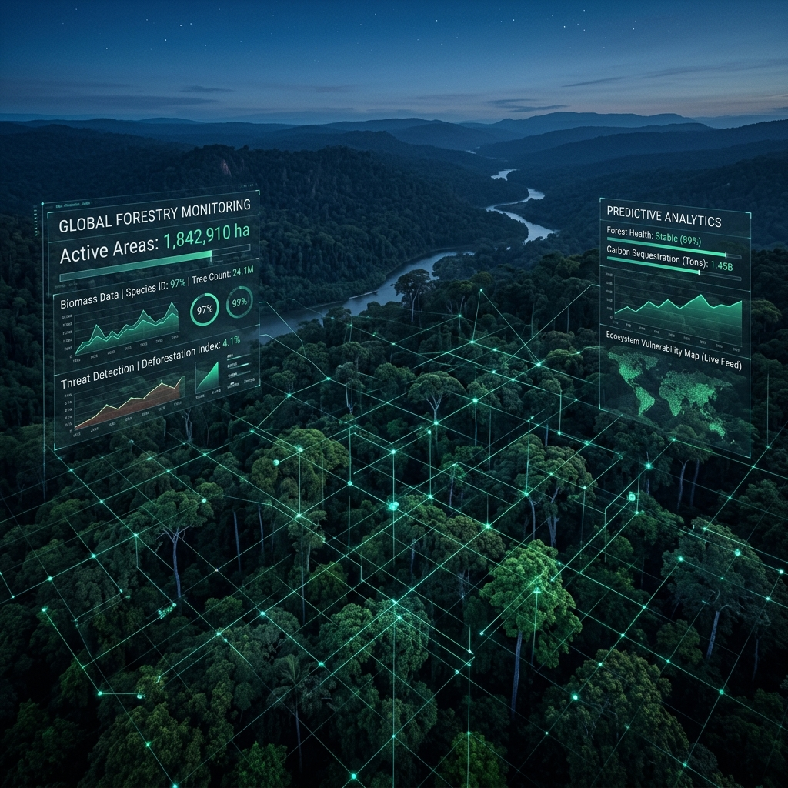
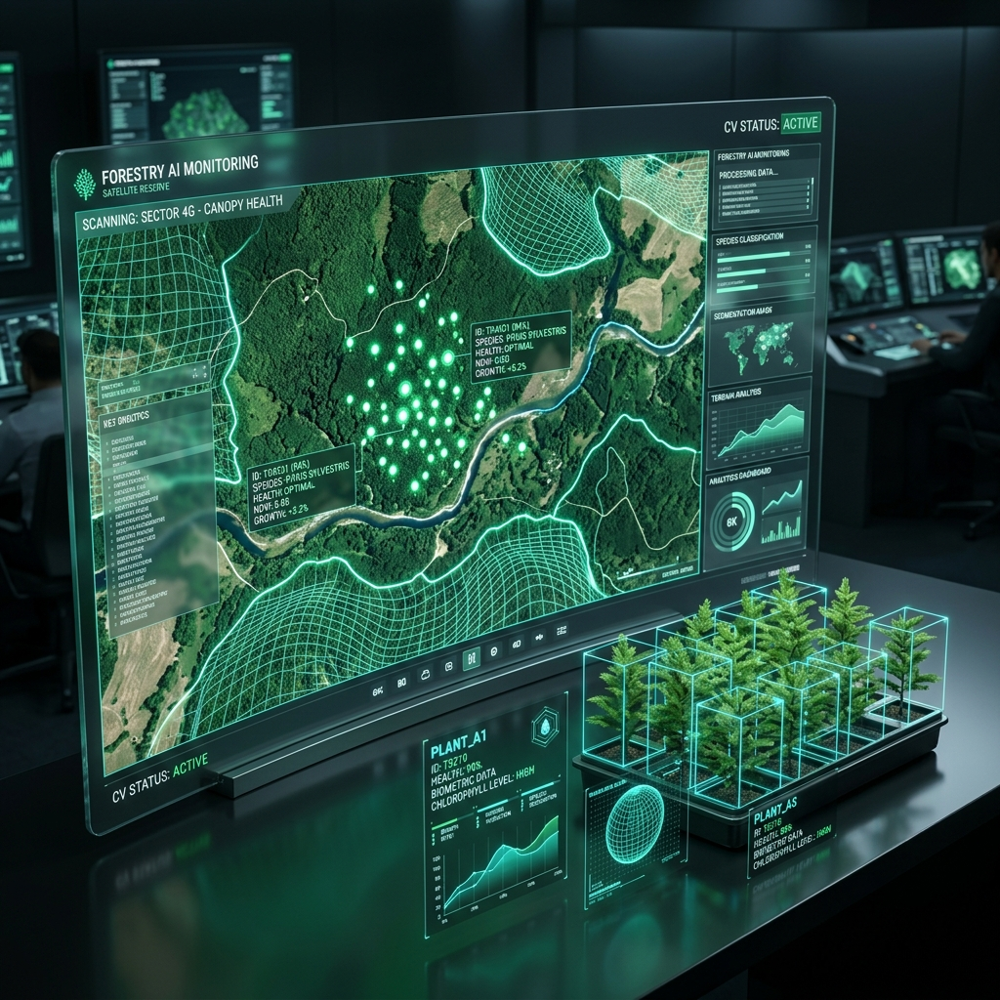

SiVerif RHL Ultimate v13 adalah standar baru dalam verifikasi Reboisasi & Rehabilitasi Hutan. Dilengkapi mesin analisis VISIPICS BigInt, Offline AI 14 Tanaman, dan proteksi keamanan lisensi Zero-Trust.
Teknologi forensik dan geospasial tercanggih untuk memastikan validitas 100% data lapangan Anda.
Identifikasi otomatis 14 jenis pohon kehutanan dan status kehidupan tanaman tanpa memerlukan koneksi internet di lapangan terpencil.
Pemindaian forensik massal hingga 100.000+ foto sekaligus. Mendeteksi duplikasi piksel, manipulasi software (Anti-Photoshop), dan anomali EXIF.
Kelola batas poligon spasial KML/KMZ secara interaktif langsung di atas peta satelit beresolusi tinggi dengan dukungan pop-up atribut lengkap.
Sistem keamanan lisensi tingkat tinggi dengan enkripsi perangkat keras (Device ID Lock) dan fitur Remote Auto-Revocation via Supabase.
Sistem tabulasi otomatis yang menghitung kuota sampling audit secara presisi sesuai standar verifikasi RHL nasional Kementerian LHK.
Ekspor laporan hasil audit forensik dalam format PDF eksklusif berlogo instansi dan tabel CSV terstruktur dalam hitungan detik.
Tidak perlu lagi memeriksa ribuan foto secara manual satu per satu. Sistem AI kami memindai setiap piksel untuk memastikan keaslian tanaman, mendeteksi manipulasi tanggal/waktu, dan memverifikasi koordinat GPS secara otomatis.

Pilih paket lisensi yang sesuai dengan skala kebutuhan verifikasi dan audit instansi Anda.
Pilihan tepat untuk proyek verifikasi lapangan jangka pendek atau evaluasi tahap akhir.
Pilihan tepat untuk auditor mandiri, konsultan pengawas, dan kontraktor pelaksana RHL.
Solusi tingkat tinggi untuk pengawasan kolektif, instansi pemerintah (BPDAS/Dinas), maupun perusahaan skala besar.